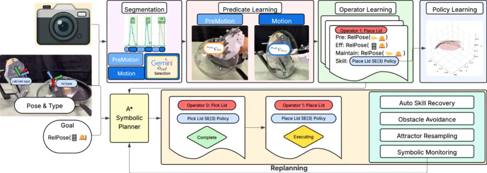
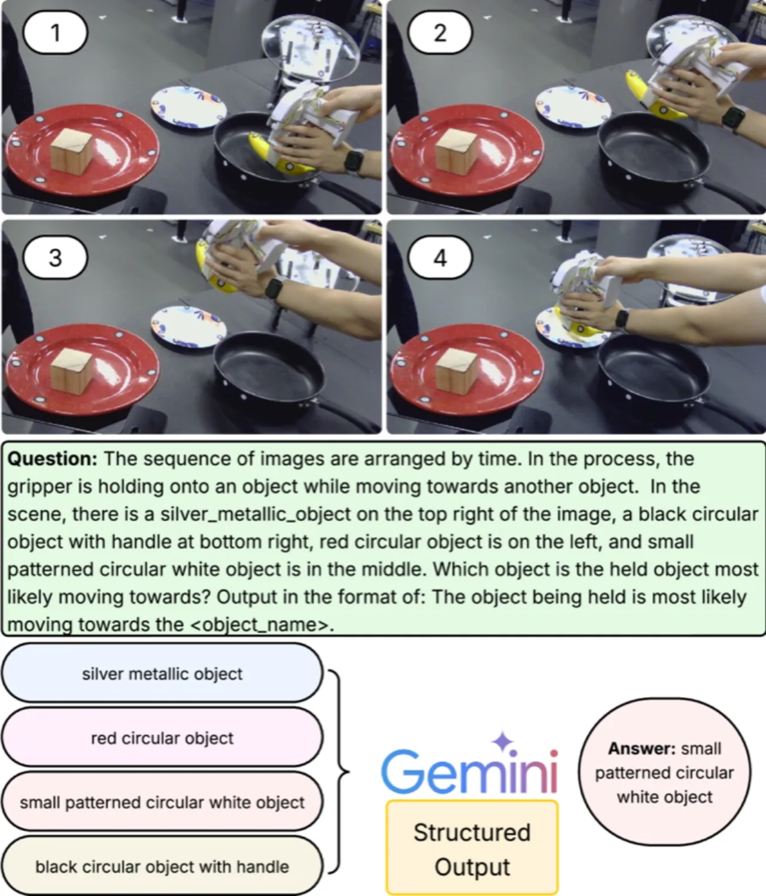
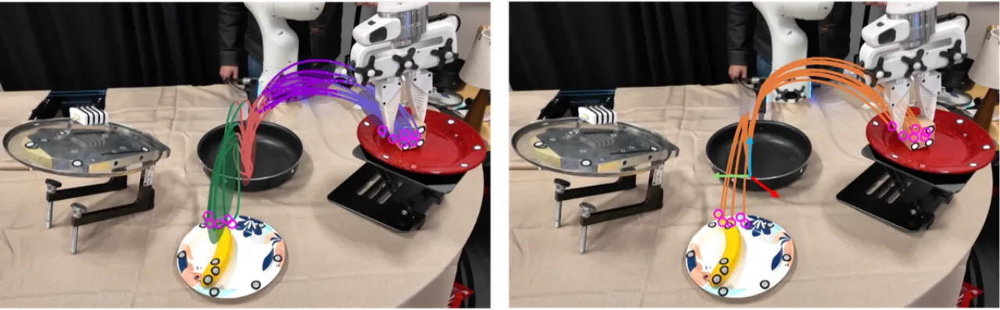
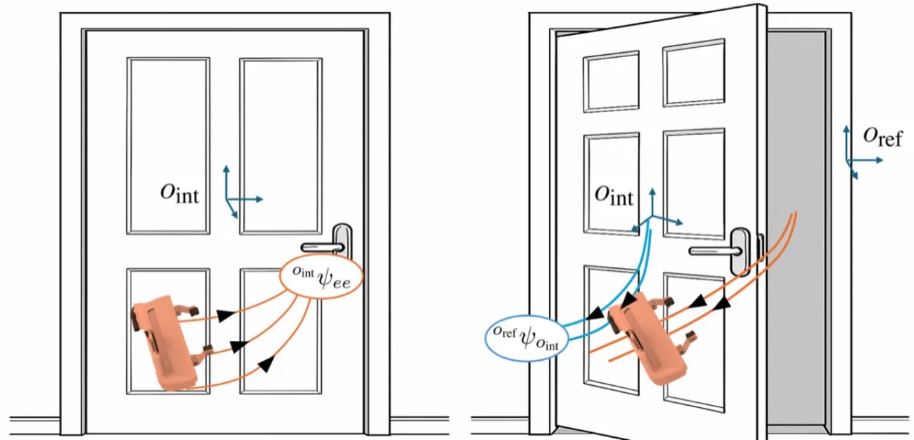
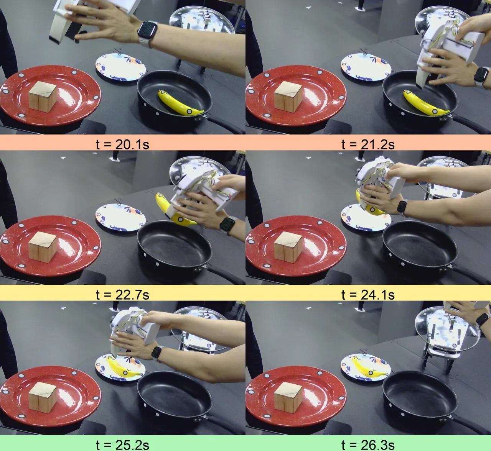
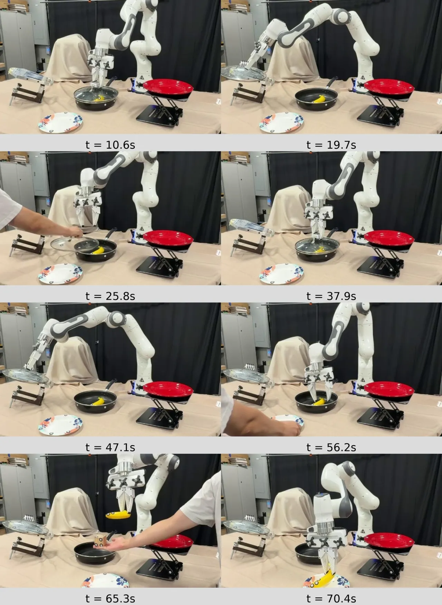

SymSkill 从无标签、未分段的演示数据中联合学习符号谓词、算子和运动技能，将模仿学习的反应性与任务与运动规划（TAMP）的组合性有机结合，仅需 1–10 条演示即可完成多步骤操作任务，并支持实时故障恢复。
当前机器人操作领域的两大主流范式——模仿学习与任务规划——分别存在根本性缺陷：前者缺乏可组合性，后者规划延迟高达数十秒，无法在动态环境中实时恢复故障。SymSkill 旨在融合两者的优势。
"Recent imitation learning approaches excel at reproducing skills from large datasets but tend to learn monolithic policies rather than reusable skills and predicates that compose into multi-step plans."

SymSkill 的核心思想是利用操作任务中普遍存在的以物体为中心的相对位姿结构。系统在相对坐标系下学习谓词和技能，仅离线调用视觉语言模型（VLM）确定参考物体，从而同时保证数据效率和在线反应速度。

根据速度阈值将每条演示分为预运动段（premotion，仅末端执行器运动）和运动段（motion，末端执行器 + 操作物体同时运动）。对运动段，使用 VLM（Gemini 2.5-Pro）在 n 个均匀采样帧上查询参考物体 o_ref，输出限制为已知场景物体集合，最大程度抑制幻觉。
谓词 ψ 建模为相对位姿的正态分布：平移分量 p_ee^o ~ N(μ_pos, Σ_pos)，旋转分量用对数映射 log(R) ~ N(μ_ori, Σ_ori) 表示。当 Mahalanobis 距离低于阈值 ε_pos 和 ε_ori 时谓词激活。运动段还额外学习物体-物体相对位姿谓词 ψ_o_int^o_ref，并在运动结束后约 2 秒的稳定窗口内增强鲁棒性。
通过在分段边界处评估谓词，将演示转化为抽象状态序列，识别具有相同效果的重复转换组。算子 α = <params, pre, eff, maintain, skill> 的前条件、效果和维持条件分别通过集合交集运算自动提取，无需人工标注。
每个算子关联一个在相对坐标系下的 SE(3) Linear Parameter Varying Dynamical Systems（LPV-DS）技能。位置控制使用线性时不变系统的混合 v = Σ γ_k(x) A_k(x - x*)，稳定性约束通过半正定规划（SDP）保证。技能的收敛反馈场使其对大范围初始位姿仍能鲁棒追踪目标。

在线执行时系统持续检查维持条件和预期效果。故障触发以下三种恢复机制之一：
实验在两个平台上验证：(1) RoboCasa 仿真环境中的 12 个单步任务及多步骤组合；(2) 真实 Franka 机械臂，仅从 5 分钟无结构 play data 中学习。每个任务仅使用 5–10 条演示，并与多个基线方法对比。
| 方法 | 谓词类型 | 技能类型 | 演示数量 | 规划延迟 |
|---|---|---|---|---|
| SymSkill（本文） | Relative Pose Cluster (Start/End Motion) | SE(3) LPV-DS | 1–10 | <100ms |
| NSIL | Relative Pose Cluster (Low Relative Velocity) | MLP BC | 200 | <100ms |
| LAMP | Relational Critical Regions | Motion Planning (MP) | 200 | >50s |
| NOD-TAMP | NDF Features | Optimization + MP | 1–10 | >50s |
| 任务 | 本文方法 | 本文（无监控） | 本文（用 Diffusion Policy） |
|---|---|---|---|
| OpenSingleDoor（开单扇门） | 100% | 100% | 0% |
| CloseSingleDoor（关单扇门） | 100% | 80% | 0% |
| PnPCounterToCab（台面→橱柜抓放） | 80% | 70% | 0% |
| PnPCabToCounter（橱柜→台面抓放） | 100% | 40% | 0% |
| PnPStoveToCounter（灶台→台面抓放） | 70% | 30% | 0% |
| PnPCounterToStove（台面→灶台抓放） | 20% | 0% | 0% |
| OpenDrawer（开抽屉） | 100% | 100% | 0% |
| CloseDrawer（关抽屉） | 70% | 50% | 40% |
| TurnOnStove（打开燃气灶） | 100% | 100% | 0% |
| TurnOffStove（关闭燃气灶） | 80% | 30% | 0% |
| TurnOnSinkFaucet（打开水龙头） | 100% | 100% | 0% |
| TurnOffSinkFaucet（关闭水龙头） | 100% | 90% | 0% |
| 平均 | 85.0% | 65.0% | 3.3% |


在 RoboCasa 中定义新任务 "StoreCheese"，由四步组成：开门 → 抓起奶酪 → 放到台面 → 关门，共串联六个技能。无需任何额外数据，直接复用已学谓词/算子/技能完成多步规划，并在执行过程中成功触发多次符号层错误恢复。
在真实 Franka 机械臂上，从 5 分钟 play data 中发现 11 个算子（Op1–Op11），涵盖拿放积木、操作锅盖、移动盘子等语义上有意义的操作原语。系统自动发现了诸如 "Thing-in-container"（物体在容器内）此类数据集特有的前条件结构，展示了无监督符号发现的能力。实验验证了三种恢复机制均有效工作。

关键消融结论：
论文结论明确指出："As future work, we plan to extend our framework to learn directly from egocentric video"。当前系统依赖精确的 6DoF 物体位姿，这在无标记、无结构环境中难以获取，限制了部署通用性。
论文明确提出计划"scale toward mobile manipulation scenarios"。当前方法聚焦于桌面操作，固定基座机械臂场景；移动操作引入的运动基座自由度和更复杂的环境交互尚未处理。
问题定义（Section II）假设物体具有预定义类型 λ(o)，且场景中的物体需事先已知。这使得系统无法泛化到未见过类型的物体，限制了开放世界部署能力。
仿真实验中通过"过滤到每个任务仅一种装置变体"来减少场景变化。现实中厨房、家具等装置存在大量几何和外观多样性，系统对此类变化的鲁棒性尚未充分验证。
尽管 VLM（Gemini 2.5-Pro）的输出被约束到已知场景物体以减少幻觉，但其识别质量仍依赖提示工程，且在物体遮挡严重或外观相似时可能出错。此外，VLM 为闭源模型，存在可重复性和版本依赖问题。